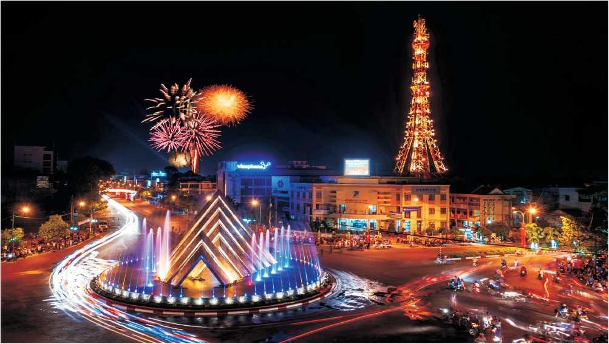

Giới thiệu chung về Tây Ninh
Tây Ninh có 08 huyện và 01 thành phố thuộc tỉnh, tổng diện tích tự nhiên 404.125,3 ha, dân số 1.126.179 người (đến 31/12/2017).
Nằm ở vị trí tiếp giáp với các địa phương có nền kinh tế phát triển nhanh, năng động, nhất là Thành phố Hồ Chí Minh - đầu tàu kinh tế phía Nam và tỉnh Bình Dương, Tây Ninh được xem là một tỉnh giữ vai trò quan trọng đối với sự phát triển của vùng kinh tế trọng điểm phía Nam. Bên cạnh đó, Tây Ninh là cửa ngõ giao thông đường bộ quan trọng sang Campuchia và các nước ASEAN. Do vậy, đây không chỉ là một đầu mối giao thương, trung chuyển hàng hoá, dịch vụ, du lịch, thương mại giữa các nước trong tiểu vùng sông Mê Kông, mà còn là một vị trí chiến lược về quốc phòng an ninh.
Tây Ninh có bề dày lịch sử đấu tranh cách mạng "trung dũng, kiên cường", cùng cả nước đấu tranh chống thực dân Pháp và đế quốc Mỹ xâm lược.
Ngay trong những ngày đầu quân xâm lược Pháp đặt chân lên mảnh đất Tây Ninh, nhiều cuộc đấu tranh đã diễn ra gắn liền với tên tuổi của Lãnh Binh Tòng, Khâm Tấn Tường, Trương Quyền... Sau khi Đảng Cộng sản Việt Nam thành lập, ánh sáng của Đảng truyền đến Tây Ninh và các cơ sở Đảng ở Giồng Nần, Quán Cơm, Phước Chỉ lần lượt hình thành. Dưới sự lãnh đạo của Đảng, phong trào cách mạng ở Tây Ninh ngày càng lớn mạnh, đến tháng 8/1945, cùng với cả nước, Tây Ninh đã giành được chính quyền về tay nhân dân. Từ đó, Đảng bộ, nhân dân và quân Tây Ninh tiếp tục cuộc kháng chiến 09 năm đầy "gian lao mà anh dũng" đánh đuổi thực dân Pháp, bảo vệ chính quyền cách mạng, bảo vệ quê hương.
Trong 21 năm trường kỳ kháng chiến chống đế quốc Mỹ, Tây Ninh trở thành một trong những cái nôi, là căn cứ địa kháng chiến đầu não của cách mạng miền Nam. Tây Ninh là nơi trú đóng của Trung ương Cục miền Nam, Mặt trận Dân tộc giải phóng miền Nam Việt Nam, Chính phủ Cách mạng lâm thời Cộng hoà miền Nam Việt Nam… Nhận được sự lãnh đạo trực tiếp của Trung ương, Tây Ninh chiến đấu oanh liệt, lập nhiều chiến tích lớn, góp phần cùng cả nước lần lượt đánh bại các chiến lược chiến tranh của đế quốc Mỹ, từ chiến lược chiến tranh một phía, chiến tranh đặc biệt, chiến tranh cục bộ đến Việt Nam hoá chiến tranh. Trong đó có thể kể đến thắng lợi của cuộc Đồng khởi vũ trang Tua Hai, mở đầu cho phong trào đồng khởi vũ trang ở miền Nam, phong trào Quyết tử giữ Gò Dầu, Vành đai diệt Mỹ Trảng Lớn, cũng như góp phần đánh bại hàng loạt cuộc càn của Mỹ - ngụy, như: Mistiff, Hattisburg, Birmingham, Attelboro, đặc biệt là phản công đánh bại cuộc càn Junction City của đế quốc Mỹ, xứng danh là miền đất trung dũng, kiên cường.
Trải qua những năm tháng chiến tranh, Tây Ninh bị tàn phá nặng nề, 60/73 xã trong toàn tỉnh bị tàn phá hoàn toàn, đời sống nhân dân gặp nhiều khó khăn, vết thương chiến tranh chưa kịp hàn gắn, Tây Ninh lại bước vào cuộc chiến đấu chống Pôn Pốt - Iêng Xary, bảo vệ chủ quyền biên giới Tây Nam của Tổ quốc, một cuộc chiến đấu không kém phần khó khăn, gian khổ và hy sinh. Sau khi giúp nước bạn Campuchia lật đổ chế độ diệt chủng Pôn Pốt - Iêng Xary, thực hiện nhiệm vụ Trung ương giao, Tây Ninh vừa phải ra sức khôi phục kinh tế tỉnh nhà, vừa thắt lưng buộc bụng chi viện sức người, sức của giúp tỉnh Kongpong Chàm (Campuchia) hồi sinh.
Dưới sự lãnh đạo sáng suốt của Đảng, bằng nỗ lực và quyết tâm của mình, Tây Ninh từng bước khắc phục hậu quả chiến tranh, khôi phục, phát triển sản xuất, kinh tế có bước phát triển vượt bậc, mọi mặt đời sống của nhân dân ngày càng được nâng cao.
Tây Ninh ngày nay là một vùng đất địa linh, có tiềm năng, lợi thế để phát triển kinh tế - xã hội, nhất là tiềm năng về du lịch với nhiều điểm tham quan lý tưởng và tỉnh đang đẩy mạnh đầu tư, khai thác, có thể kể đến một số điểm chính:
Khu Di tích lịch sử - văn hoá và thắng cảnh Núi Bà Đen trải rộng trên diện tích 24 km2, là một quần thể gồm 03 ngọn núi tạo thành, gồm: Núi Bà Đen, núi Heo, núi Phụng. Trong đó, núi Bà Đen là ngọn núi cao nhất Đông Nam bộ (986 mét) và từ lâu đã trở thành biểu trưng của tỉnh. Nhằm phục vụ nhu cầu tham quan, tín ngưỡng của du khách, ngoài hệ thống cáp treo vận hành năm 1998, năm 2013 tỉnh khai trương hệ thống cáp treo mới, công nghệ Châu Âu hiện đại, thời gian vận hành suốt tuyến rút ngắn hơn nhiều so với hệ thống cáp treo cũ. Tỉnh đã kêu gọi đầu tư thêm khu du lịch sinh thái Ma Thiên Lãnh trên quần thể khu di tích này.
Quần thể Khu Di tích lịch sử Quốc gia đặc biệt Trung ương Cục miền Nam bao gồm ba phân khu: Khu Di tích lịch sử căn cứ Trung ương Cục miền Nam, Khu Di tích lịch sử căn cứ Mặt trận dân tộc Giải phóng miền Nam Việt Nam, Khu Di tích lịch sử căn cứ Chính phủ Cách mạng lâm thời Cộng hoà miền Nam Việt Nam. Ở đây lại có Vườn Quốc gia Lò Gò - Xa Mát nên quần thể di tích vừa là điểm tham quan, du lịch gần gũi thiên nhiên, vừa là địa chỉ đỏ, nơi thực hiện các hoạt động về nguồn nhằm lưu giữ, giáo dục truyền thống cách mạng cho các thế hệ hôm nay và mai sau.
Hồ Dầu Tiếng là hồ thuỷ lợi nhân tạo có quy mô lớn nhất nước và khu vực Đông Nam Á, với dung tích hồ chứa 1,58 tỉ m3 nước, diện tích lòng hồ ước tính rộng khoảng 27.000 ha nằm giữa 3 tỉnh Tây Ninh, Bình Dương và Bình Phước. Hồ Dầu Tiếng nằm trên thượng nguồn sông Sài Gòn, cách Thành phố Hồ Chí Minh hơn 100 km đường bộ. Nhiệm vụ chính của hồ là phục vụ nông nghiệp, công nghiệp, kết hợp dân sinh chống xâm ngập mặn, bảo vệ môi trường.
Toà Thánh Cao Đài là Tổ đình của đạo Cao Đài Tây Ninh, đồng thời là một công trình kiến trúc đặc sắc, đáp ứng nhu cầu tín ngưỡng và tham quan của đồng bào trong và ngoài nước.
Có ưu thế được thiên nhiên ưu đãi về thổ nhưỡng, khí hậu ổn định, không gian xanh chiếm diện tích lớn, Tây Ninh luôn chú trọng phát triển kinh tế theo hướng bền vững, dựa trên thế mạnh kinh tế nông nghiệp, đặc biệt là cao su, mía, mì, đậu phộng; đẩy mạnh phát triển các lĩnh vực kinh tế xanh như thương mại - dịch vụ...
Cùng với đó, tỉnh rất quan tâm đầu tư phát triển kết cấu hạ tầng khu kinh tế, cửa khẩu, tạo điều kiện phát triển kinh tế biên mậu. Kêu gọi, thu hút các nhà đầu tư vào đầu tư, khai thác ở các ngành, lĩnh vực kinh tế lợi thế, tiềm năng, như: công nghiệp tinh chế sản phẩm nông nghiệp; công nghiệp hỗ trợ, công nghiệp công nghệ cao.
Đến nay, Khu Công nghiệp Trảng Bàng, Khu Chế xuất Linh Trung III, Khu Công nghiệp Chà Là cơ bản đã được lấp đầy; Khu Liên hợp Công nghiệp - Đô thị - Dịch vụ Phước Đông - Bời Lời, Khu Công nghiệp Thành Thành Công thu hút nhiều dự án đầu tư quy mô lớn, công nghệ tiên tiến, tạo điều kiện thúc đẩy công nghiệp tỉnh phát triển. Các doanh nghiệp có sự quan tâm đầu tư đổi mới trang thiết bị, máy móc, công nghệ, nâng cao chất lượng, giá trị sản phẩm.
Trung tâm Thành phố Tây Ninh (Ảnh: Nguồn Internet)
Phát huy truyền thống cách mạng của quê hương Tây Ninh trung dũng kiên cường, với những chiến công hiển hách của quân và dân Tây Ninh trong kháng chiến chống thực dân Pháp và đế quốc Mỹ xâm lược, Đảng bộ, chính quyền và nhân dân Tây Ninh không ngừng nỗ lực phấn đấu, tự lực, tự cường, đoàn kết, đổi mới trong xây dựng và bảo vệ Tổ quốc. Với vai trò lãnh đạo, điều hành năng động của cấp uỷ, chính quyền các cấp qua các thời kỳ; sự cần cù trong lao động sản xuất và cũng rất thân thiện, chất phác, gần gũi của người Tây Ninh là những nét văn hoá đặc trưng của vùng đất Đông Nam bộ, Tây Ninh ngày nay đang trở thành điểm đến lý tưởng của các nhà đầu tư và du khách trong và ngoài nước. Đảng bộ và nhân dân Tây Ninh luôn trân trọng, tự hào với truyền thống lịch sử vẻ vang của quê hương trung dũng kiên cường và đang ngày đêm viết tiếp nên những trang sử mới của một Tây Ninh trong thời kỳ đổi mới và hội nhập, thực hiện công nghiệp hoá, hiện đại hoá.
Lưu ý: nội dung trang web được lấy từ: www.tayninh.gov.vn